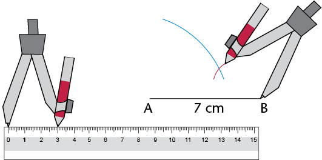
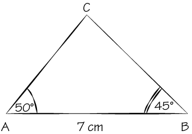
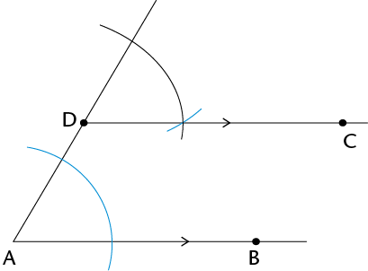

Konstruksie van meetkundige figure
Jy gaan in hierdie hoofstuk leer hoe om verskillende lyne, hoeke en figure te konstrueer of teken. Jy gaan tekeninstrumente soos ’n liniaal gebruik om reguit lyne te trek, ’n gradeboog om hoeke te meet en teken, en ’n passer om sirkelboë te teken wat ’n bepaalde afstand van ’n punt af is. Jy gaan deur die verskillende konstruksies ’n paar van die eienskappe van driehoeke en vierhoeke ondersoek; met ander woorde, jy gaan meer uitvind oor wat altyd waar is vir alle of sekere soorte driehoeke en vierhoeke.
Halvering van lyne
Wanneer ons meetkundige figure konstrueer, of teken, moet ons dikwels lyne of hoeke halveer. Halvering beteken om iets in twee gelyke dele te verdeel. Daar is verskillende maniere om ’n lynstuk te halveer.
Halveer ’n lynstuk met ’n liniaal
- Lees deur die volgende stappe.
Stap 1: Trek lynstuk AB en bepaal sy middelpunt.

Stap 2: Trek enige lynstuk deur die middelpunt.

Die klein merkies op AF en FB wys dat AF en FB ewe lank is.
CD word ’n halveerlyn genoem, want dit halveer AB. AF = FB.
- Gebruik ’n liniaal om die
volgende lynstukke te trek en halveer: AB = 6 cm en
XY = 7
cm.
Jy het in Graad 6 geleer hoe om ’n passer te gebruik om sirkels en sirkelboë (gedeeltes van sirkels) te teken. Ons kan sirkelboë (of boë) gebruik om ’n lynstuk te halveer.
Halveer ’n lynstuk met ’n passer en liniaal
- Lees deur die volgende stappe.
Stap 1
Sit die passer op een eindpunt van die lynstuk (punt A). Trek ’n boog bo en onder die lyn. (Let op dat al die punte op die boog bo en onder die lyn dieselfde afstand vanaf punt A af is.)

Stap 2
Sit die passer op punt B sonder om sy stelling te verander. Trek ’n boog bo en onder die lyn sodat die boë die eerste twee sny. (Die twee punte waar die boë sny, is dieselfde afstand van punt A en van punt B af.)

Stap 3
Gebruik ’n liniaal om die punte te verbind waar die boë sny. Hierdie lynstuk (CD) is die halveerlyn van AB.

’n Loodlyn is ’n lyn wat ’n ander lyn teen ’n hoek van 90°.
Let ook op dat CD loodreg op AB is. Dit word daarom ook ’n loodregte halveerlyn genoem.
- Werk in jou oefeningboek. Gebruik ’n passer en ’n liniaal om te oefen om loodregte halveerlyne op lynstukke te trek .
Konstruksie van loodlyne
’n loodlyn vanaf ’n gegewe punt
- Lees deur die volgende stappe.
Stap 1
Sit jou passer se ankerpunt op die gegewe punt (punt P). Trek ’n boog oor die lyn aan elke kant van die gegewe punt. Moenie die passer se stelling verander as jy die tweede boog trek nie .

Stap 2
Vanaf elke boog op die lyn, trek nog ’n boog op die teenoorgestelde kant van die lyn van waar die gegewe punt (P) is. Die twee nuwe boë sal sny.

Stap 3
Gebruik jou liniaal om die gegewe punt (P) met die punt te verbind waar die boë sny (Q).

PQ is loodreg op AB. Ons skryf dit ook soos volg : PQ ⊥ AB.
- Gebruik jou passer en liniaal om ’n
loodlyn vanaf elke
gegewe punt na die lynstuk te trek:


’n loodlyn by ’n gegewe punt op ’n lyn
- Lees deur die volgende stappe.
Stap 1
Sit jou passer se ankerpunt op die gegewe punt (P). Trek ’n boog oor die lyn aan weerskante van die gegewe punt. Moenie die passer se stelling verander as jy die tweede boog trek nie .

Stap 2
Maak jou passer oop sodat dit wyer is as die afstand vanaf een van die boë na punt P. Sit die passer se ankerpunt op elke boog en trek ’n boog bo of onder punt P. Die twee nuwe boë sal sny.

Stap 3
Gebruik jou liniaal om die gegewe punt (P) en die punt waar die boë sny (Q) te verbind.
PQ ⊥ AB

- Gebruik jou passer en liniaal om ’n
loodlyn by die gegewe punt op elke lyn te trek:

Halvering van hoeke
Hoeke word gevorm waar enige twee lyne ontmoet of sny. Ons gebruik grade (°) om hoeke te meet.
Meet en klassifiseer hoeke
In die figure hier onder het elke hoek ’n nommer van 1 tot 9.
- Gebruik ’n gradeboog om die groottes
van al die hoeke in elke figuur te meet. Skryf
jou antwoorde op elke figuur neer
.
-
- Gebruik jou antwoorde om die hoekgroottes
hier onder in te vul.
\(\hat{1} = \text{_______} ^{\circ}\)
\(\hat{1} + \hat{2} = \text{_______} ^{\circ}\)
\(\hat{1} + \hat{4} = \text{_______} ^{\circ}\)
\(\hat{2} + \hat{3} = \text{_______} ^{\circ}\)
\(\hat{3} + \hat{4} = \text{_______} ^{\circ}\)
\(\hat{1} + \hat{2} + \hat{4} = \text{_______} ^{\circ}\)
\(\hat{1} + \hat{2} + \hat{3} + \hat{4} = \text{_______} ^{\circ}\)
\(\hat{6} = \text{_______} ^{\circ}\)
\(\hat{7} + \hat{8} = \text{_______} ^{\circ}\)
\(\hat{6} + \hat{7} + \hat{8} = \text{_______} ^{\circ}\)
\(\hat{5} + \hat{6} + \hat{7} = \text{_______} ^{\circ}\)
\(\hat{6} + \hat{5} = \text{_______} ^{\circ}\)
\(\hat{5} + \hat{6} + \hat{7} + \hat{8} = \text{_______} ^{\circ}\)
\(\hat{5} + \hat{6} + \hat{7} + \hat{8} + \hat{9} = \text{_______} ^{\circ}\)
- Skryf langs elke antwoord hier bo neer watter soort hoek dit is, dit wil sê skerp, stomp, regte, gestrekte of inspringende hoek of ’n omwenteling.

Halveer hoeke sonder ’n gradeboog
- Lees deur die volgende stappe.
Stap 1
Sit die passer se ankerpunt op punt B, die hoekpunt van die hoek. Trek ’n boog oor elke been van die hoek .

Stap 2
Sit die passer op die punt waar een boog ’n been sny en trek ’n boog binne die hoek. Sonder om die passer se stelling te verander, herhaal vir die ander been sodat die twee boë sny.

Stap 3
Gebruik ’n liniaal om die hoekpunt met die punt te verbind waar die boë sny (D).
DB is die halveerlyn van \(\hat{ABC}\).

- Gebruik jou passer en liniaal om die hoeke
te halveer.

Jy kan elk van die hoeke met ’n gradeboog meet om te kyk of jy die gegewe hoek korrek gehalveer het.
Konstruksie van spesiale hoeke sonder ’n gradeboog
Konstrueer hoeke van en
- Lees deur die volgende stappe.
Stap 1
Trek ’n lynstuk (JK). Met die passer se ankerpunt op punt J, trek ’n boog oor JK om verby punt J te gaan.

Stap 2
Sonder om die passer se stelling te verander, verskuif die passer na die punt waar die boog JK sny en trek ’n boog wat die eerste een sny.

Stap 3
Verbind punt J met die punt waar die twee boë sny (P). \(\hat{PJK}\) = 60°

Wanneer jy later meer oor die eienskappe van driehoeke leer, sal jy verstaan waarom die metode hier bo ’n hoek van 60° skep. Of kan jy dit nou al uitwerk?
(Wenk: Wat weet jy van gelyksydige driehoeke?)
Aangrensend beteken âlangsâ.
-
- Konstrueer ’n hoek van 60°by punt B op die volgende bladsy.
- Halveer die hoek wat jy gekonstrueer het.
- Kan jy sien dat die gehalveerde hoek uit twee hoeke van 30° bestaan?
- Verleng lynstuk
BC na A. Meet dan die hoek wat aangrensend tot die hoek van 60° is.
Wat is sy grootte?
- Die hoek van
60° en sy aangrensende hoek werk saam uit op
Konstrueer hoeke van en
- Konstrueer ’n hoek van 90° by punt A. Kyk weer na afdeling 10.2 as jy sukkel.
- Halveer die 90° -hoek om ’n hoek van 45° te skep. Blaai terug na afdeling 10.3 as jy hulp nodig het.
Uitdaging
Werk in jou oefeningboek. Probeer om die volgende hoeke te konstrueer sonder om ’n gradeboog te gebruik: 150°, 210° en 135°.
Konstruksie van driehoeke
In hierdie afdeling gaan jy leer hoe om driehoeke te konstrueer. Jy sal ’n potlood, ’n gradeboog, ’n liniaal en ’n passer nodig hê.
’n Driehoek het drie sye en drie hoeke. Ons kan ’n driehoek konstrueer as ons sommige van sy afmetings ken, dit wil sê sy sye, sy hoeke, of party van sy sye en hoeke.
Konstrueer driehoeke
Konstrueer driehoeke as drie sye gegee word
- Lees deur die volgende stappe. Dit
beskryf hoe om
\( {\triangle}\text{ABC}\) met sylengtes van 3 cm,
5 cm en 7 cm te konstrueer..
Stap 1
Trek een sy van die driehoek met ’n liniaal. Die konstruksie is dikwels makliker as jy met die langste sy begin .

Stap 2
Met radius 5 cm en ankerpunt op A, trek ’n boog. Die derde hoekpunt van die driehoek sal iewers op hierdie boog wees.

Stap 3
Met radius 3 cm en ankerpunt B, trek ’n boog om die eerste boog te sny. Hierdie snypunt sal die derde hoekpunt van die driehoek wees.

Stap 4
Gebruik jou liniaal om punt A en punt B te verbind aan die punt waar die boë sny (punt C).

- Werk in jou oefeningboek. Volg die
stappe hier bo om die volgende driehoeke te
konstrueer:
- \({\triangle}\text{ABC}\) met sye 6 cm, 7 cm en 4 cm
- \({\triangle}\text{KLM}\) met sye 10 cm, 5 cm en 8 cm
- \({\triangle}\text{PQR}\) met sye 5 cm, 9 cm en 11 cm
Konstrueer driehoeke as sekere hoeke en sye gegee word
- Gebruik die ruwe sketse in
(a) tot (c) hier onder om akkurate driehoeke te konstrueer
deur ’n liniaal, passer en gradeboog te gebruik. Doen die konstruksie langs elke
skets.
- Die stippellyne wys waar jy ’n passer moet gebruik om die lengte van ’n sy te meet.
- Gebruik ’n gradeboog om die grootte van die gegewe hoeke te meet.
- Konstrueer
\({\triangle}\text{ABC}\), met twee hoeke en een sy gegee .

- Konstrueer
\({\triangle}\text{KLM}\), met
twee sye en
’n hoek gegee .

- Konstrueer reghoekige
\({\triangle}\text{PQR}\),
met die
skuinssy en een ander sy gegee
.

- Meet die ontbrekende hoeke en sye van elke driehoek in 3(a) tot (c) op die vorige bladsy. Skryf die afmetings by jou voltooide konstruksies.
- Vergelyk elkeen van jou gekonstrueerde driehoeke in 3(a) tot (c) met ’n klasmaat se driehoeke. Is die driehoeke presies dieselfde?
As driehoeke presies dieselfde is, sê ons hulle is kongruent .
Uitdaging
- Konstrueer hierdie driehoeke:
- \( {\triangle}\text{STU}\), met drie hoeke gegee : \(S = 45^{\circ}\), \(T = 70^{\circ}\) en \(U = 65^{\circ}\).
- \( {\triangle}\text{XYZ}\), met twee sye en die hoek teenoor een van die sye gegee: \(X = 50^{\circ}\), \(XY = 8 \text{ cm}\) en \(XZ = 7 \text{ cm}\).
- Kan jy meer as een skets vir elke driehoek hier bo kry? Verduidelik jou bevindings aan ’n klasmaat.
Eienskappe van driehoeke
Die hoeke van ’n driehoek kan dieselfde grootte of verskillende groottes wees. Die sye van ’n driehoek kan dieselfde lengte of verskillende lengtes wees.
Eienskappe van gelyksydige driehoeke
-
- Konstrueer \({\triangle}\text{ABC}\) langs sy ruwe skets hier onder.
- Meet en merk die groottes van al sy
sye en hoeke.

- Meet en skryf die groottes van die sye en hoeke van \({\triangle}DEF\) hier regs neer.
- Albei driehoeke in vrae 1 en 2 word
gelyksydige
driehoeke
genoem. Bespreek met ’n klasmaat of
die volgende waar is vir ’n gelyksydige driehoek:
- Al die sye is ewe lank.
- Al die hoeke is gelyk aan 60°.
Eienskappe van gelykbenige driehoeke
-
- Konstrueer
\({\triangle}\text{DEF}\) met
\(EF = 7
\text{cm}, ~\hat{E} = 50^{\circ} \) en
\(\hat{F} = 50^{\circ}\).
Konstrueer ook \({\triangle}\text{JKL}\) met \(JK = 6 \text{cm},~KL = 6 \text{cm}\) en \(\hat{J}=70^{\circ}\).
- Meet en merk al die sye en hoeke van elke driehoek.
- Konstrueer
\({\triangle}\text{DEF}\) met
\(EF = 7
\text{cm}, ~\hat{E} = 50^{\circ} \) en
\(\hat{F} = 50^{\circ}\).
- Albei driehoeke hier bo word
gelykbenige driehoeke
genoem. Bespreek met ’n
klasmaat of die volgende waar is vir ’n gelykbenige driehoek:
- Net twee sye is ewe lank.
- Net twee hoeke is ewe groot.
- Die twee gelyke hoeke is teenoor die twee gelyke sye.
Die som van die hoeke in ’n driehoek
-
Kyk na jou gekonstrueerde driehoeke
\({\triangle}\text{ABC},~{\triangle}\text{DEF}
\) en
\({\triangle}\text{JKL}\) hier bo en op die vorige
bladsy. Wat is die som van die drie hoeke elke keer
?
- Het jy gevind dat die som van die
binnehoeke van elke driehoek
180° is? Doen die
volgende om te kontroleer of dit waar is vir ander driehoeke.
- Konstrueer enige driehoek op ’n skoon
vel papier. Merk die hoeke A, B en C en
knip die driehoek uit.

- Skeur die hoeke van die driehoek netjies af en pas hulle langs mekaar.
- Let op dat \(\hat{A} , \hat{B} \text{ en } \hat{C} \) ’n gestrekte hoek vorm. Voltooi: \(\hat{A} + \hat{B} + \hat{C} = \text{______}^{\circ}\)
- Konstrueer enige driehoek op ’n skoon
vel papier. Merk die hoeke A, B en C en
knip die driehoek uit.
Ons kan aflei dat die som van die binnehoeke van ’n driehoek altyd gelyk is aan 180°.
Eienskappe van vierhoeke
’n Vierhoek is enige geslote figuur met vier reguit sye. Ons klassifiseer vierhoeke volgens hulle sye en hoeke. Ons let op watter sye ewewydig, loodreg of gelyk is. Ons let ook op watter hoeke ewe groot is.
Eienskappe van vierhoeke
- Meet en skryf die groottes van al die hoeke
en die lengtes van al die sye van elke
vierhoek hier onder neer.
Vierkant

Reghoek

Parallelogram

Ruit

Trapesium

Vlieër

- Gebruik jou antwoorde in vraag 1.
Maak ’n
â in die toepaslike blokkie hier onder om
te wys watter eienskap korrek vir elke figuur is.
Eienskappe
Parallelogram
Reghoek
Ruit
Vierkant
Vlieër
Trapesium
Net een paar sye is ewewydig
Teenoorstaande sye is ewewydig
Teenoorstaande sye is ewe lank
Alle sye is ewe lank
Twee pare aangrens- ende sye is ewe lank
Teenoorstaande hoeke is ewe groot
Alle hoeke is gelyk
Som van die hoeke in ’n vierhoek
- Tel die vier hoeke van elke vierhoek
op die vorige bladsy bymekaar. Wat merk jy op
oor die som van die hoeke van elke vierhoek?
- Het jy gevind dat die som van die
binnehoeke van elke vierhoek gelyk is aan
360°? Doen die volgende om te kontroleer of dit waar is vir ander
vierhoeke.
- Gebruik ’n liniaal om enige vierhoek op ’n skoon vel papier te konstrueer.
- Merk die hoeke A, B, C en D. Knip die vierhoek uit.
- Skeur die hoeke van die vierhoek netjies af en pas hulle langs mekaar.
- Wat sien jy raak?
Ons kan aflei dat die som van die binnehoeke van ’n vierhoek altyd 360° is.
Konstruksie van vierhoeke
Jy het in afdeling 10.2 geleer hoe om loodlyne te konstrueer. As jy weet hoe om ewewydige lyne te konstrueer, behoort jy enige vierhoek akkuraat te kan konstrueer.
Konstrueer ewewydige lyne om vierhoeke te teken
- Lees deur die volgende stappe.
Stap 1
Merk ’n punt D vanaf lynstuk AB. Hierdie punt D sal op die lyn wees wat ewewydig aan AB sal wees. Trek ’n lyn vanaf A deur D .

Stap 2
Met ankerpunt op A, trek ’n boog wat AD en AB sny. Hou dieselfde passerstelling en trek ’n boog vanaf punt D soos gewys word.

Stap 3
Stel die passer se wydte op die afstand tussen die punte waar die eerste boog AD en AB sny. Met ankerpunt op die punt waar die tweede boog AD sny, trek ’n derde boog om die tweede boog te sny .


Stap 4
Trek ’n lyn van D af deur die punt waar die twee boë sny. DC is ewewydig aan AB.
 - Oefen in jou oefeningboek om ’n parallelogram, vierkant en ruit te konstrueer.
- Gebruik ’n gradeboog om te probeer om vierhoeke met ten minste een stel ewewydige sye te teken.
- Doen die volgende konstruksie in jou
oefeningboek.
- Gebruik ’n passer en liniaal om ’n gelyksydige \({\triangle}\text{ABC}\) met sye 9 cm te konstrueer.
- Halveer \(\hat{B}\)sonder om ’n gradeboog te gebruik. Die halveerlyn sny AC by punt D.
- Gebruik ’n gradeboog om \(A\hat{D}B\). te meet. Skryf die afmeting op die tekening.
- Benoem die volgende soorte driehoeke en
vierhoeke.
-
- Watter van die volgende
vierhoeke pas by elke beskrywing hier onder? (Daar sal
dikwels meer as een antwoord wees.
)
parallelogram; reghoek; ruit; vierkant; vlieër; trapesium
-
Alle sye is ewe lank en alle hoeke is ewe groot.
-
Twee pare aangrensende sye is ewe lank.
-
Een paar sye is ewewydig.
-
Teenoorstaande sye is ewewydig.
-
Teenoorstaande sye is ewewydig en alle hoeke is ewe groot.
- Alle sye is ewe lank.
-
Alle sye is ewe lank en alle hoeke is ewe groot.